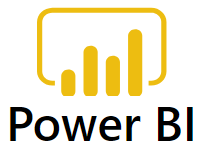
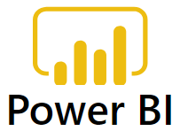

About Me
I am a seasoned professional in the dynamic realm of data science and machine learning. My
expertise spans a wide spectrum of Machine Learning (ML) algorithms,
encompassing classical
models like linear and logistic regression to advanced techniques such as deep learning.
Proficient in Python, I leverage its extensive libraries, including TensorFlow
and PyTorch, to
implement and fine-tune ML models.
My specialization extends to cutting-edge domains such as Natural Language Processing
(NLP),
where I have successfully applied Transformers and Large Language
Models (LLMs) to tackle
intricate language-related tasks. This includes expertise in fine-tuning LLMs for specific
applications, showcasing a nuanced understanding of transfer learning in the context of modern
NLP.
In addition to traditional ML algorithms, my skill set includes proficiency in handling complex
data structures and tasks with transformers like BERT, and
FLAN-T5. I am well-versed in
leveraging Pre-trained Language Models for a variety of applications, demonstrating an
ability to extract meaningful insights from vast amounts of unstructured data.
My work extends to novel concepts such as full fine tuning Transformers by applying
Instruction Fine Tuning and PEFT
using LoRA, where I applied innovative approaches to increase the performance
of the model and achieve better results.
I am enthusiastic about contributing my in-depth knowledge of ML algorithms, Python programming,
deep learning, NLP, and the latest advancements in transformer-based models to elevate the data
science capabilities
- First Name: Nithin Raj
- Last Name: Kore
- Date of Birth: 19th May, 1997
- Age: 26 years
- Address: Buffalo, NY, USA
- Email: nkore6864@buffalo.edu
- Languages Known: English, Hindi, Telugu
Education
Master's - Data Science and Applications
State University of New York at Buffalo, NY, USABachelor of Engineering in Electronics & Communication Engineering
Osmania University ( Vasavi College of Engineering), Hyderabad, Telangana, IndiaHigher Secondary Education, Telangana State
Sri Gayatri Jr. College, Hyderabad, Telangana, IndiaWork Experience
Infosys
Systems Engineer
Project 1
● Cleaned and prepared data for analysis, ensuring a 20% increase in data
accuracy for
analytical purposes
● Developed automated reports and dashboards using Microsoft Power BI,
resulting in a 25%
increase in project efficiency and
transparent communication of project progress with clients and stakeholders
● Collaborated with multi-functional teams, to analyze data to identify trends
and provide
insights through reports using Powerbi
● Created internal-facing data reporting mechanisms, enhancing firm processes
and procedures,
leading to a 30% improvement in
internal workflow and efficiency
● Collaborated with clients and internal staff to identify process improvement
opportunities,
proposed system modifications, and
devised data governance strategies, contributing to a 20% increase in overall process
efficiency
● Connected data from disparate systems, enabling cohesive reports and
dashboards for
data-driven decision-making, resulting in a 15%
improvement in decision-making accuracy
● Overall, the implemented data-driven initiatives resulted in a 20% increase
in project
efficiency, positively impacting project outcomes
and client satisfaction
Project 2
● Played a key role in querying and analyzing large volumes of real-world
healthcare data sets
from diverse sources such as insurance
● Developed and designed 1000+ SQL queries, stored procedures, and functions to
perform extract,
transform and load operation for
analysis and reporting
● Cleaned, validated, and transformed raw data into structured
format
● Ensured data quality and integrity through extensive testing while working on
large datasets,
resulting in a 90% reduction in data errors
● Created SQL Server procedures, and views, contributing to a 30% improvement
in data cleaning
and transformation efficiency
● Utilized Python to enhance data analysis capabilities and streamline data
processing tasks
● Created over 10 key visually compelling reports and interactive dashboards
using Microsoft
Power BI to facilitate a transparent project
progress communication with clients and stakeholders
● Developed comprehensive documentation, contributing to a 25% reduction in
onboarding time for
new team members
Projects
Want to work on a Project together?Python
Python is my preferred programming language. Most of my projects are done using Python.
Know MoreRock Paper Scissor Image Recognition
• Built and trained CNN to accurately classify and recognize images of hand signs, leveraged
Python-based frameworks, including
TensorFlow, to achieve a remarkable 89% accuracy in identifying rock, paper, or scissors
• Mastered deep learning techniques, including ANNs and CNNs, skillfully executed image
preprocessing tasks, displaying a strong
understanding of neural network architectures by obtaining 90% accuracy, leveraging deep
learning, data augmentation, keras, tensorflow, and python
Sentiment Analysis on Restaurant Reviews
• Conducted Sentiment Analysis on Restaurant Reviews utilizing Natural Language Processing
(NLP), leveraging NLP techniques to
analyze and classify sentiments expressed in customer reviews, providing valuable insights for
business improvement
• Presenting adept application of deep learning methodologies to tackle intricate challenges
in text classification, emphasizing mastery in
sentiment analysis, NLP, text preprocessing, countvectorizer, NLTK
Predicting Customer Churn in Banking Using Artificial Neural Networks
Constructed an Artificial Neural Network model to forecast customer churn in a banking context exploiting historical data, resulting in an impressive accuracy of 85%. Mastered deep learning techniques, including Artificial Neural Networks (ANN), skillfully executed data preprocessing tasks, and showed expertise in implementing solutions using TensorFlow, Keras, and Python
Know MoreMy Skills
Technical Expertise
Data Science & Machine Learning Fundamentals,ML packages & libraries including Numpy, Pandas, Scikit-Learn, TensorFlow, Keras
Natural Language Processing,
Deep Learning - Neural Networks,
Generative AI using LLM's,
Data Preprocessing, Analysis,
Data Visualization using Matplotlib & Seaborn,
SQL Querying
Programming Languages & Softwares


 


Soft Skills
Innovative professional with excellent communication and collaborative skills, demonstrated effective leadership in guiding multi-site teams, adept at problem-solving with meticulous attention to detail, showcasing adaptability in dynamic work environments, exhibiting initiative, effective time management, and a practical approach to continuous learningMy Certifications
Generative AI with LLM's
● Completed "Generative AI with Large Language Models (LLMs)" course, mastering the fundamentals of generative AI. Gained proficiency in the generative AI lifecycle, including data gathering, model selection, and deployment. Deep understanding of transformer architecture, fine-tuning, and empirical scaling laws.● Implemented state-of-the-art methods for training, tuning ( Fully fine-tuning, PEFT using LoRA & Soft Prompts ), performance evaluation, and deployment, exploring challenges in generative AI. Acquired practical intuition and skills for efficient utilization of generative AI technology.
Machine Learning - Natural Language Processing
● Excelled the art of text-to-vector conversion exploiting techniques like CountVectorizer, TF-IDF, word2vec, and GloVe● Mastered document retrieval, probability models, language models, and Markov models, setting the stage for advanced applications like Transformers, BERT, and GPT-3. Achieved proficiency in spam detection, sentiment analysis, and text summarization.
● Proficient in ML (Naive Bayes, Logistic Regression, PCA, SVD), deep-learning (ANNs, CNNs, RNNs, LSTM, GRU), and utilizes Python, Scikit-Learn, Tensorflow, and more for NLP tasks, covering text preprocessing, tokenization, stopwords, lemmatization, stemming, and parts-of-speech (POS) tagging.
Machine Learning A-Z
● Acquired a depth knowledge of Reinforcement Learning, Natural Language Processing (NLP), and deep-learning. Became proficient in conducting impactful analyses for business applications and personal projects● Developed expertise in strategically selecting suitable ML models, showcasing versatility in regression, classification, clustering, association rules, recommendation algorithms, and deep learning.
Fundamentals of Visualization using Tableau
● Proficient in Tableau for translating complex data into compelling visual narratives, enhancing communication, and facilitating informed decision-makingEssential Design principles for Tableau
● Equipped with skills to design clear and effective visualizations, enhancing communication of complex insightsContact Me
Name
Nithin Raj KoreFind Me @
1123, Avenida BenitoSan Jose, CA
USA, 95131